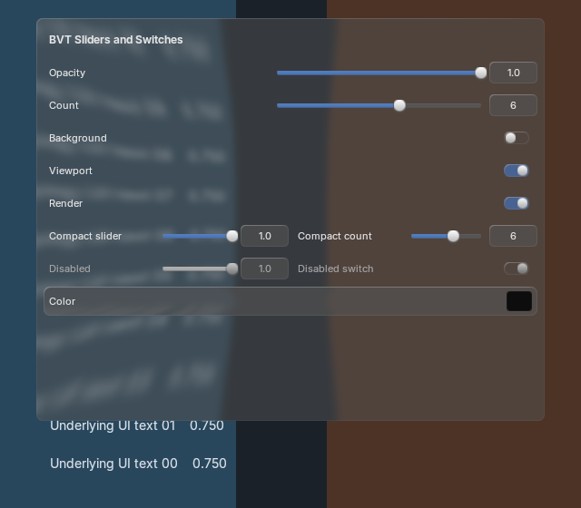


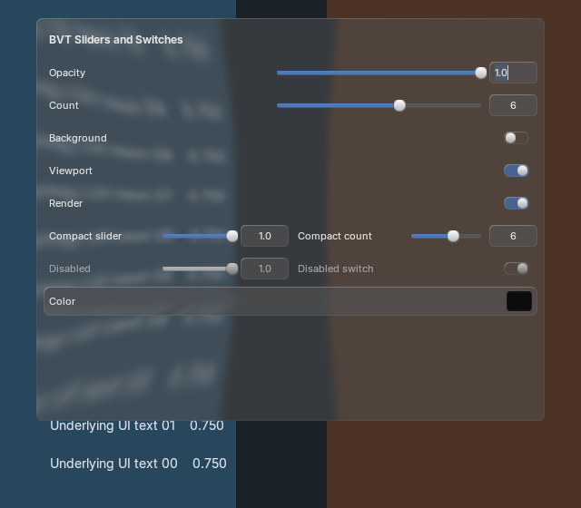

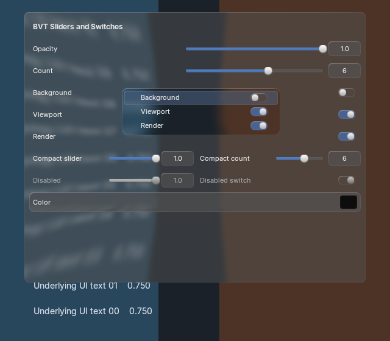

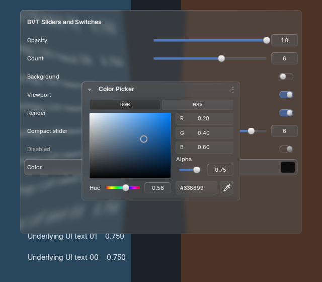

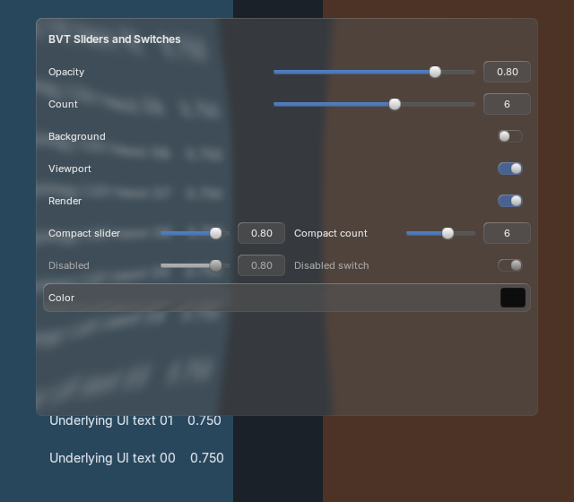

Sliders now have a label, a thin track with a squash-and-stretch bubble, and a separate number field. Narrow rows stack the label above the controls. Boolean properties use the source glass switches, including contributed menu rows. Hue and alpha use the same slider treatment; hue retains its rainbow track.
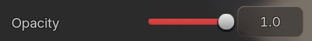
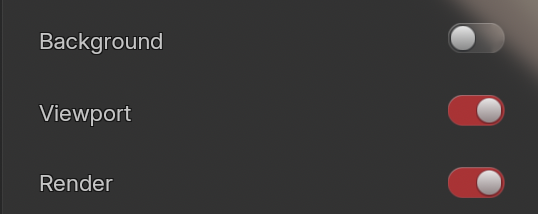
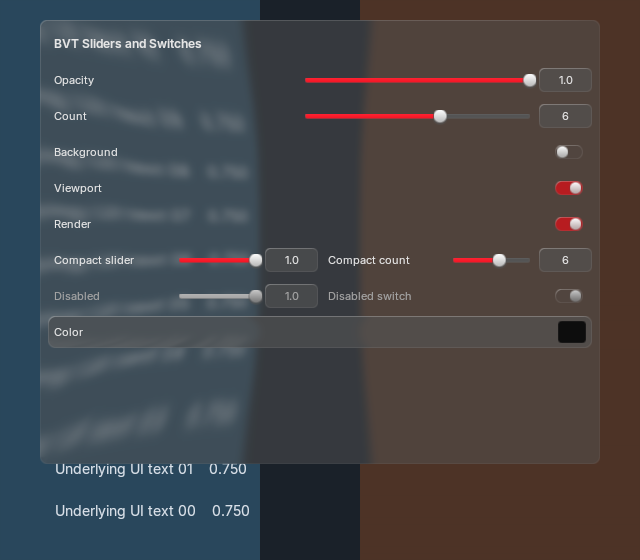
The source geometry, shaders and spring behavior are reused. These screenshots have unknown UI scale, exact theme and background, so this comparison does not establish exact pixel matching. The red palette is an explicit test fixture; production follows Blender’s active theme. Acceptance record.
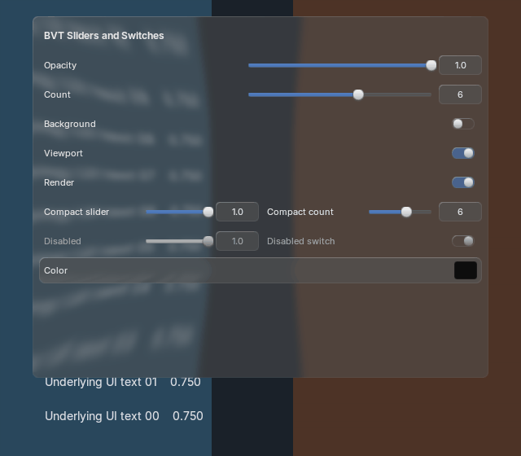
Wide numeric controls retain the requested 15% amplitude. Switches use 0.36-second eased travel plus the source’s finite spring. Global/per-control motion settings still apply. No animation changes logical hit targets.





900 motion frames match with native text batching enabled/disabled. One backdrop production, one strong blur, five offscreens and recorded font/shader/batch/layout identities remain stable. Window input covers track drag, number entry, switches, exact owner menus, rollback and idle teardown. RNA tests · Window tests · Capture record.
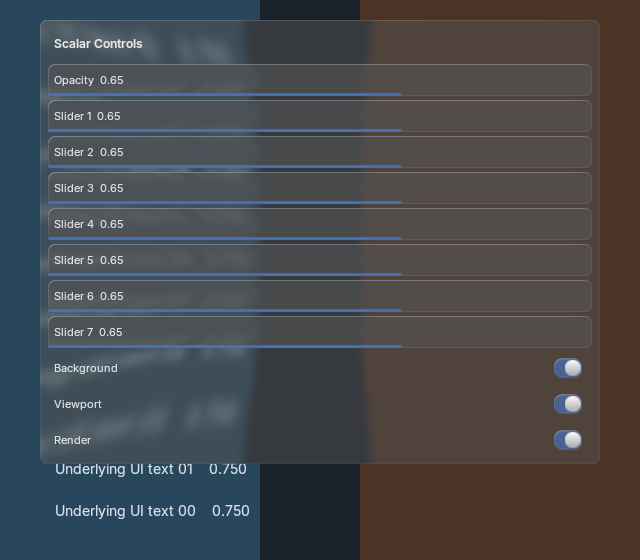
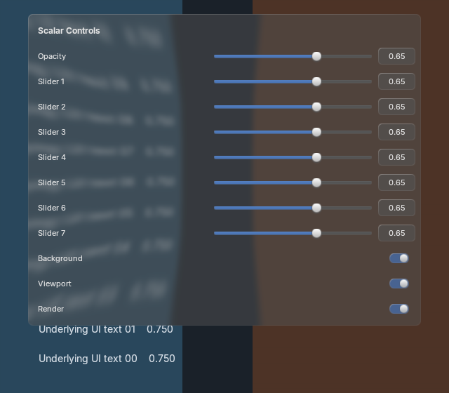
Eight sliders and three switches, then the same property context menu; 20 warmups and 100 CPU submission samples. The added bubble geometry and separate field/label draws have a measured cost; no extra backdrop capture or blur is introduced. These measurements do not establish GPU/input latency or source-equivalent speed. Before · After · Measured results and limits.
Blender 4.2 fallbacks are retained but not runtime-qualified here. Exact screenshot/reference matching, broader theme/platform coverage and full API parity remain open. Behavior and integration.